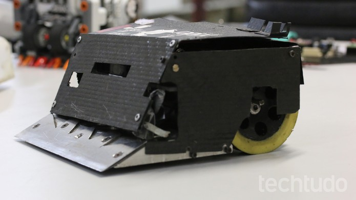
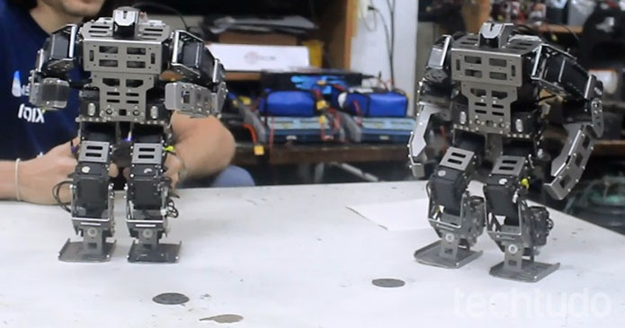

Drones Mavic e Phantom 4 Pro da DJI são lançados no Brasil
Postado em 13 de Março 2017
A DJI anunciou o lançamento no Brasil de dois novos drones: Mavic e Phantom 4 Pro.
O país é o primeiro da América do Sul a receber os modelos,
que são voltados para áreas como agropecuária e jornalismo.
Os drones foram lançados nesta quarta-feira (15), em evento que acontece em São Paulo.
Apesar de seu foco principal ser voltados para profissionais de comunicação e agroindústria,
os quadricópteros da fabricante chinesa também fazem sucesso com o consumidor comum e já podem ser
comprados pelos preços sugeridos de R$ 7 mil, para o Mavic, e R$ 10.500, para o Phatom 4 Pro.
O drone Mavic é dobrável e de fácil transporte, pesando 743 gramas e de pequenas dimensões (8,3 cm x 8,3 cm x 19,8 cm),
e pode chegar à velocidade de voo de 65 km/h, com autonomia de 27 minutos por bateria.
Com ele, é possível capturar fotos e vídeos em alta qualidade e realizar transmissões em tempo real a até 7 km do seu ponto de partida,
segundo a DJI.
O drone ainda conta com sensores anti colisão e sistema de estabilização para evitar imagens tremidas.
Apesar de ter uso comum, para selfies e capturas de vídeos normais,
o Mavic é indicado para jornalistas que necessitam de uma ferramenta para realizar coberturas e transmitir informações em tempo real.
Outros usos podem ser aplicados por engenheiros, que usariam o drone para inspecionar fechadas, ou bombeiros em missões de busca e resgate.
O Mavic tem o preço sugerido de R$ 7 mil.
Phantom 4 Pro, um drone com várias utilidades
Já o Phantom 4 Pro conta com sensores anti colisão em todos os seus lados,
tornando-o mais seguro para voar em ambientes fechados.
Um dos usos que a DJI apresenta para o drone é o de inspeção de estoques em fábricas,
desde que o usuário instale um sensor RFID ao aparelho.
Com uma câmera com sensor de uma polegada, que fotografa em 20 megapixels e filma em até 4K,
em 60 FPS, o Phantom 4 Pro já tem bastante procura por profissionais do setor da agropecuária,
que já utilizam outros modelos para checagem de rebanhos e condições das áreas de plantio.
Com a instalação de uma câmera térmica, é possível verificar pontos específicos da plantação que podem estar sendo atacados por pragas.
O Phantom 4 Pro tem preço sugerido de R$ 10.500.
Robôs de brasileiros conquistam prêmios e batalhas
Postado em 13 de Março 2017
A robótica ganha cada vez mais espaço em escolas, cursos técnicos e universidades no Brasil.
Equipes formadas por alunos do ensino público e privado conquistam prêmios em campeonatos internacionais
e colocam em prática o que antes ficavam restrito às salas de aula.
O interesse crescente pela área pode estar relacionado tanto às batalhas de robôs quanto a possibilidade de colocar
a mão na massa para construir equipamentos de última geração.
A liga de robótica do Brasil, conhecida como RoboCore,
reúne 548 grupos de todas as regiões do país. A maioria dos times já participa de competições e acumula supermáquinas em seus laboratórios.
Atualmente, a número 1 do ranking é a RioBotz, equipe da Pontifícia Universidade Católica do Rio de Janeiro (PUC-Rio),
que conta com 99 membros e 33 robôs. Em seguida, estão a ThundeRatz,
da Escola Politécnica da Universidade de São Paulo (Poli-USP), de São Paulo,
e a Uai!rrior, da Universidade Federal de Itajubá (Unifei), Minas Gerais.
Cada equipe tem autonomia e define o seu foco de trabalho, que pode ser desde a produção de robôs menores até modelos mais potentes,
geralmente campeões em batalhas que mais lembram o famoso "UFC", torneio de artes marciais mistas.
Para bancar todos os gastos, que variam de R$ 1 mil (um robô inseto),
até US$ 40 mil (cerca de R$ 125 mil) em máquinas de combate, os times recebem patrocínios de suas instituições de ensino,
além de empresas privadas.
O trabalho dos grupos pode ser colocado à prova, na prática,
com a criação de aparelhos antibomba e de resgate, ou até mesmo para a indústria automotiva e petroquímica.
No panorama atual, as criações dessas equipes aproveitam as batalhas de robôs para fazer
delas vitrines para desenvolvimento e venda da tecnologia a outras especialidades.
Batalhas e competições
No Brasil, os campeonatos mais importantes são o Winter Challenge e o Summer Challenge,
abertos para equipes particulares e filiadas a instituições de ensino, e o Ultimate Robot Combat,
que é uma das atrações da Campus Party, evento de tecnologia e inovação que reúne público universitário em diferentes regiões do país.
No âmbito internacional, as competições têm parcerias com grandes canais de TV e chegam a oferecer produções dignas de Hollywood.
Entre as principais disputas estão a BattleBots, a Robogames, conhecida como a olimpíada mundial de robótica,
e a Combots, a Copa do Mundo dos robôs da categoria combate.
Nesses campeonatos, as batalhas são divididas em diferentes categorias, entre elas sumô, hóquei e combate.
Nas competições de sumô, como o próprio nome já diz, o objetivo é empurrar o adversário para fora do ringue.
Para isso, as equipes trabalham com equipamentos de 25g a 3kg, controlados de forma autônoma ou por rádio-controle.
Equipe da PUC-Rio conquista campeonatos mundiais com robôs inteligentes
Postado em 13 de Março 2017
Robôs poderosos, inteligentes e quase indestrutíveis. Filmes como “O Exterminador do Futuro” se tornam realidade.
Agora qualquer um pode ter um robô, seja de brinquedo, para ajudar nas tarefas mais básicas da casa,
ou até para desativar bombas e colaborar no trabalho em locais de difícil acesso.
Para ampliar essas aplicações e o conhecimento na área, equipes de robótica colocam em prática os cálculos ensinados em sala de aula.
Na PUC-Rio, Pontifícia Universidade Católica do Rio de Janeiro,
a equipe RioBotz monta e testa diferentes tipos de robôs.
Com prêmios em campeonatos mundiais, o grupo trabalha com componentes eletrônicos e mecânicos muitas vezes ainda desconhecidos no Brasil,
sendo uma ponte para a inovação na indústria nacional.
Um dos itens da vitrine da RioBotz é o robô humanoide. O modelo faz todo tipo de movimento,
como se fosse um ser humano. É possível programá-lo para subir escadas, pular,
jogar futebol e executar golpes marciais. Caso seja necessária uma aplicação mais específica,
basta criar um código no computador e ativá-lo para o que quiser.
Segundo o professor Marco Antonio Meggiolaro, coordenador da equipe da PUC-Rio,
além de desenvolver tarefas tradicionais de engenharia no manuseio de robôs, os alunos aprendem a montar projetos prontos para o mercado.
“No time, os alunos colocam em prática o know how de como desenvolver um equipamento confiável.
Eles adquirem experiência com componentes avançados que permitem trazer algumas
coisas para empresas que às vezes elas não tinham. O aluno já sai tendo trabalhado e ganhado um campeonato mundial com os equipamentos”,
afirma Meggiolaro.